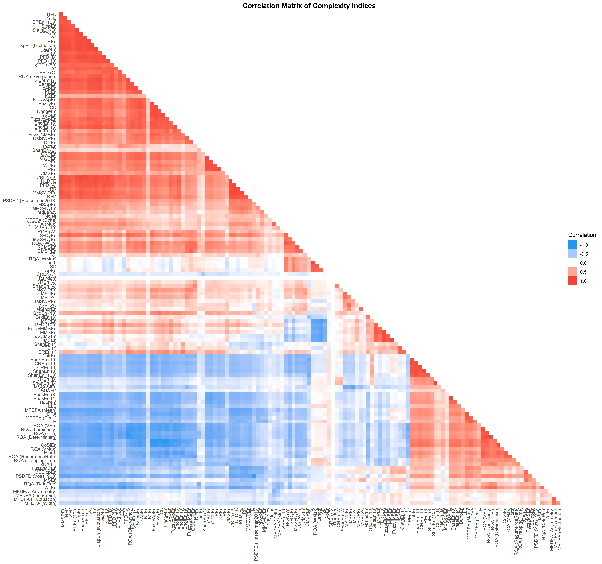
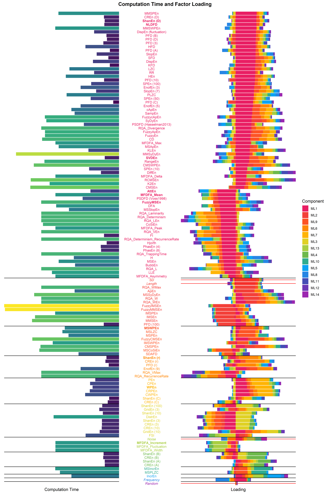
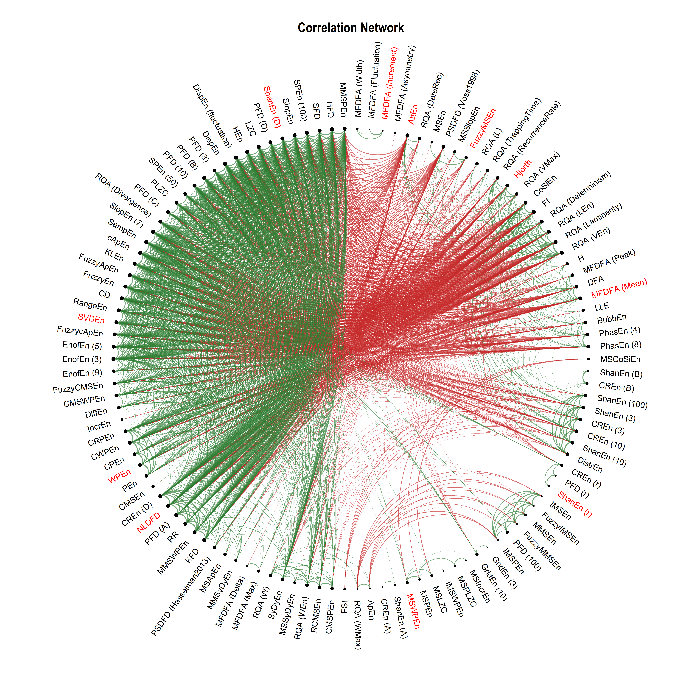
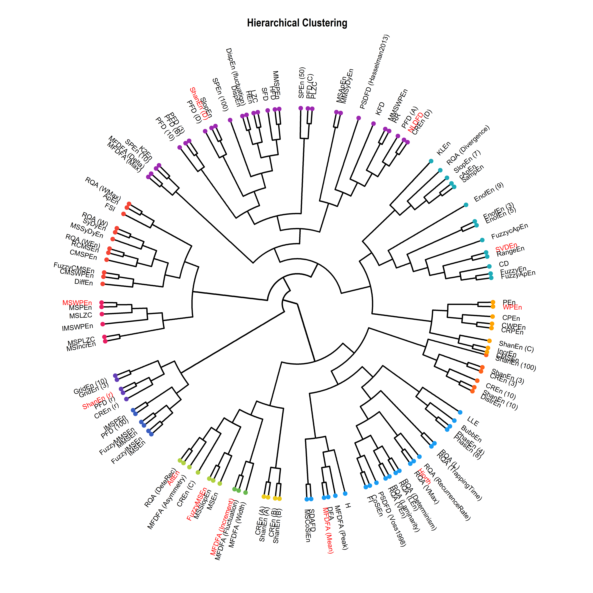
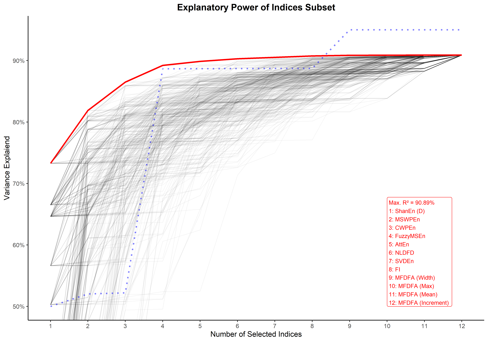

The Structure of Chaos: An Empirical Comparison of Fractal Physiology Complexity Indices using NeuroKit2
Contents
The Structure of Chaos: An Empirical Comparison of Fractal Physiology Complexity Indices using NeuroKit2#
This study can be referenced by citing the package and the documentation.
We’d like to improve this study, but unfortunately we currently don’t have the time. If you want to help to make it happen, please contact us!
Introduction#
Complexity is an umbrella term for concepts derived from information theory, chaos theory, and fractal mathematics, used to quantify unpredictability, entropy, and/or randomness. Using these methods to characterize physiological signals (a subfield commonly referred to as “fractal physiology,” Bassingthwaighte et al., 2013) has shown promising results in the assessment and diagnostic of the state and health of living systems Goetz (2007).
There has been an exponential increase in the number of complexity indices in the past few decades (A. C. Yang & Tsai, 2013). Although these new procedures are usually mathematically well-defined and theoretically promising, limited empirical evidence is available to understand their similarities and differences (Lau et al., 2021; A. C. Yang & Tsai, 2013). Moreover, some of these methods are resource-intensive and require long computation times. This complicates their application with techniques that utilise high sampling-rates (e.g., M/EEG) and makes them impractical to implement in real-time settings - such as brain-computer interfaces (Manis et al., 2018; “Refined Composite Multiscale Dispersion Entropy and Its Application to Biomedical Signals,” 2017). As such, having empirical data about the computation time of various complexity indices would prove useful, for instance to objectively guide their selection, especially in contexts where time or computational resourcse are limited.
Additionally, the lack of a comprehensive open-source and user-friendly software for computing various complexity indices likely contributes to the limited availability of empirical comparison (Flood & Grimm, 2021). Indeed, most complexity indices are only described mathematically in journal articles, with reusable code seldom made available, therefore limiting their further application and validation (Flood & Grimm, 2021; A. C. Yang & Tsai, 2013). To address this gap, we added a comprehensive set of complexity-related features to NeuroKit2, a Python package for physiological signal processing (Makowski et al., 2021). This submodule aims at enabling users to compute a vast amount of complexity indices. The code is designed to be as fast as possible, while still written in pure Python (though with the help^of dependencies such as Numpy or Pandas, Harris et al., 2020; McKinney et al., 2010) to maximize the re-usability, transparency, and correctness.
Leveraging this tool, the goal of this study is to empirically compare a large number of complexity indices, inspect how they relate to one another, and derive recommendations for indices selection. More specifically, we will quantify the complexity using 128 indices of various types of signals with varying degrees of noise, using NeuroKit2. We will then project the results on a latent space through factor analysis, and review the various indices that we find the most relevant and interesting in regards to their representation of the latent dimensions. This analysis will be complemented by hierarchical clustering.
Methods#

The script to generate the data can be found at github.com/neuropsychology/NeuroKit/studies/complexity_benchmark
We started by generating 5 types of signals, one random-walk, two
oscillatory signals made (with one made of harmonic frequencies that
results in a self-repeating - fractal-like - signal), and two complex
signals derived from Lorenz systems (with parameters
();
and
(
),
respectively). Each of this signal was iteratively generated at 5
different lengths. The resulting vectors were standardized and each were
added 5 types of
noise (namely violet
,
blue
,
white
,
pink
,
and brown
noise). Each noise type was added at 48 different intensities (linearly
ranging from 0.1 to 4). Examples of generated signals are presented in
Figure 1.
The combination of these parameters resulted in a total of 6000 signal
iterations. For each of them, we computed 128 complexity indices, and
additional basic metrics such as the standard deviation (SD), the
length of the signal and its dominant frequency. We also included a
random number to make sure that our our dimensionality analyses
accurately discriminate this unrelated feature. The parameters used
(such as the time-delay
or the embedding dimension) are documented in the data generation
script. For a complete description of the various indices included,
please refer to NeuroKit’s documentation at
https://neuropsychology.github.io/NeuroKit.
Results#
The data analysis script, the data and the code for the figures is fully available at github.com/neuropsychology/NeuroKit/studies/complexity_benchmark. The analysis was performed in R using the easystats collection of packages (Lüdecke et al., 2021; Lüdecke et al., 2020; Makowski et al., 2020/2022, 2020).
Computation Time#
Firstly, one should note that the computation times presented in Figure 2 are relative and do not correspond to real times, as these would highly depend on the machine used. Instead, the goal is here to convey some intuition on the differences between different classes of indices (using the same machine and the same language of implementation, i.e., Python). It is possible that computational advances or improvements in the code efficiency might change some of these values, but we believe that the “big picture” should remain fairly stable, as it is to a large extend driven by the inherent nature of the algorithms under consideration.
Despite the relative shortness of the signals considered (a few thousand points at most), the fully-parallelized data generation script took 24h to run on a 48-cores machine. After summarizing and sorting the indices by computation time, the most striking feature is the order of magnitude of difference between the fastest and slowest indices. Additionally, some indices are particularly sensitive to the signal length, a property which combined with computational cost led to indices being 100,000 times slower to compute than others.
In particular, multiscale indices were among the slowest to compute due to their iterative nature (a given index is computed multiple times on coarse-grained subseries of the signal). Indices related to Recurrence Quantification Analysis (RQA) were also relatively slow and did not scale well with signal length.
data <- df |>
mutate(i = paste(Signal, Length, Noise_Type, Noise_Intensity, sep = "__")) |>
select(i, Index, Result) |>
pivot_wider(names_from = "Index", values_from = "Result") |>
select(-i)
# pca <- principal_components(data, n=1) |>
# arrange(desc(sign(PC1)), desc(abs(PC1)))
get_cor <- function(data, plot=FALSE) {
cor <- correlation::correlation(data, method = "pearson", redundant = TRUE) |>
correlation::cor_sort(hclust_method = "ward.D2")
if(plot) {
p_data <- cor |>
cor_lower() |>
mutate(
Text = insight::format_value(r, zap_small = TRUE, digits = 3),
Text = str_replace(str_remove(Text, "^0+"), "^-0+", "-"),
Parameter2 = fct_rev(Parameter2)
)
p <- p_data |>
ggplot(aes(x = Parameter2, y = Parameter1)) +
geom_tile(aes(fill = r)) +
# geom_text(aes(label = Text), size = 2) +
scale_fill_gradient2(low = "#2196F3", mid = "white", high = "#F44336", midpoint = 0, limit = c(-1, 1), space = "Lab", name = "Correlation", guide = "legend") +
scale_x_discrete(expand = c(0, 0)) +
scale_y_discrete(expand = c(0, 0)) +
labs(title = "Correlation Matrix of Complexity Indices", x = NULL, y = NULL) +
theme_minimal() +
theme(
axis.text.x = element_text(angle = 90, hjust = 1),
plot.title = element_text(hjust = 0.5, face="bold"),
panel.grid.major = element_blank(),
panel.grid.minor = element_blank()
)
plot(p)
}
cor
}
cor <- get_cor(data)
For the subsequent analyses, we removed statistically redundant indices, such as PowEn - identical to SD, CREn (100) - identical to CREn (10), and FuzzyRCMSEn - identical to RCMSEn.
Correlation#
data <- data |>
select(
-`FuzzyRCMSEn`,
-`CREn (100)`,
-`PowEn`
)
cor <- get_cor(data, plot=TRUE)

The Pearson correlation analysis revealed that complexity indices, despite their multitude and their conceptual specificities, do indeed share similarities. They form two major clusters that are easily observable (the blue and the red groups in Figure 2). However, these two anti-correlated groups are mostly revealing of the fact that some indices, by design, index the “predictability”, whereas others, the “randomness”, and thus are negatively related to one-another. In order to extract finer groupings, further analyses procedures are applied below.
Factor Analysis#
r <- correlation::cor_smooth(as.matrix(cor))
selection <- c("ShanEn (D)",
"NLDFD",
"SVDEn",
"AttEn",
"MFDFA (Mean)",
"MFDFA (Max)",
"MFDFA (Increment)",
"MFDFA (Width)",
"FuzzyMSEn",
"MSWPEn",
"Hjorth",
"CWPEn")
rez <- parameters::factor_analysis(data, cor = r, n = 14, rotation = "varimax", sort = TRUE, fm="mle")
# rez <- parameters::principal_components(data, n = 15, sort = TRUE)
# rez
col <- gsub('[[:digit:]]+', '', names(rez)[2])
closest <- colnames(select(rez, starts_with(col)))[apply(select(rez, starts_with(col)), 1, \(x) which.max(abs(x)))]
loadings <- attributes(rez)$loadings_long |>
mutate(
Loading = Loading,
Component = fct_relevel(Component, rev(names(select(rez, starts_with(col))))),
Variable = fct_rev(fct_relevel(Variable, rez$Variable))
)
colors <- setNames(see::palette_material("rainbow")(length(levels(loadings$Component))), levels(loadings$Component))
# Sort by sign too
names(closest) <- rev(levels(loadings$Variable))
idx_order <- loadings |>
mutate(Closest = closest[as.character(loadings$Variable)],
Sign = sign(Loading)) |>
filter(Component == Closest) |>
arrange(desc(Component), desc(Sign), desc(abs(Loading))) |>
pull(Variable) |>
as.character()
separations <- table(closest)[intersect(levels(loadings$Component), unique(closest))]
face <- rep("plain", length(idx_order))
face[idx_order %in% c("SD", "Length", "Noise", "Random", "Frequency")] <- "italic"
face[idx_order %in% selection] <- "bold"
p1 <- loadings |>
mutate(Variable = fct_relevel(Variable, rev(idx_order))) |>
ggplot(aes(x = Variable, y = Loading)) +
geom_bar(aes(fill = Component), stat = "identity") +
geom_vline(xintercept = c("SD", "Length", "Noise", "Random", "Frequency"), color = "red") +
geom_vline(xintercept = head(cumsum(separations), -1) + 0.5) +
scale_y_continuous(expand = c(0, 0)) +
scale_fill_material_d("rainbow") +
coord_flip() +
theme_minimal() +
guides(fill = guide_legend(reverse = TRUE)) +
labs(x = NULL) +
theme(
axis.text.y = element_text(
color = rev(colors[closest]),
face = rev(face),
hjust = 0.5
),
axis.text.x = element_blank(),
plot.title = element_text(hjust = 0.5),
panel.grid.major = element_blank(),
panel.grid.minor = element_blank()
)
p2 <- order |>
mutate(Duration = 1 + Duration * 10000) |>
filter(Index %in% loadings$Variable) |>
mutate(Index = fct_relevel(Index, rev(idx_order)),
Duration = ifelse(is.na(Duration), 0, Duration)) |>
ggplot(aes(x = log10(Duration), y = Index)) +
geom_bar(aes(fill = log10(Duration)), stat = "identity") +
geom_hline(yintercept = head(cumsum(separations), -1) + 0.5) +
scale_x_reverse(expand = c(0, 0)) +
scale_y_discrete(position = "right") +
scale_fill_viridis_c(guide = "none") +
labs(x = "Computation Time", y = NULL) +
theme_minimal() +
theme(
axis.text.y = element_blank(),
axis.text.x = element_blank(),
plot.title = element_text(hjust = 0.5),
panel.grid.major = element_blank(),
panel.grid.minor = element_blank()
)
(p2 | p1) + patchwork::plot_annotation(title = "Computation Time and Factor Loading", theme = theme(plot.title = element_text(hjust = 0.5, face = "bold")))

The agreement procedure for the optimal number of factors suggested that the 125 indices can be mapped on a multidimensional space of 14 orthogonal latent factors, that we extracted using a varimax rotation. We then took interest in the loading profile of each index, and in particular the latent dimension that it maximally relates to (see Figure 3).
This first factor is the closest to the largest amount of indices, and is positively loaded by indices that are sensitive to the deviation of consecutive differences (e.g., ShanEn - D, NLDFD, PFD - D). In line with this, this factor was negatively loaded by indices related to Detrended Fluctuation Analysis (DFA), which tends to index the presence of long-term correlations. As such, this latent factor might encapsulate the predominance of short-term vs. long-term unpredictability. The second factor was strongly loaded by signal length and SD, and thus might not capture features of complexity per se. Indices with the most relation to it were indices known to be sensitive to signal length, such as ApEn. The third factor included multiscale indices, such as MSWPEn. The fourth factor was loaded by permutation entropy indices, such as WPEn. The fifth and the sixth factors were loaded by indices grouped by the signal symbolization method used (by a tolerance level r, or by the number of bins for the fifth and the sixth factors, respectively). The seventh factor was loaded positively by the amount of noise, and negatively by multifractal indices such as MFDFA - Increment, suggesting a sensitivity to regularity. Finally, as a manipulation check for our factorization method, the random vector did not load unto any factors.
Hierarchical Clustering and Connectivity Network#
library(ggraph)
extrafont::loadfonts()
g <- cor |>
cor_lower() |>
mutate(width = abs(r),
edgecolor = as.character(sign(r))) |>
filter(!Parameter1 %in% c("SD", "Length", "Random", "Frequency", "Noise"),
!Parameter2 %in% c("SD", "Length", "Random", "Frequency", "Noise")) |>
tidygraph::as_tbl_graph(directed=FALSE) |>
mutate(importance = tidygraph::centrality_authority(weights = abs(r)),
group = as.factor(tidygraph::group_louvain(weights = abs(r)))) |>
tidygraph::activate("edges") |>
filter(abs(r) > 0.6) |>
tidygraph::activate("nodes") |>
filter(!tidygraph::node_is_isolated()) |>
mutate(colors = closest[name],
selection = ifelse(name %in% selection, TRUE, FALSE))
p1 <- g |>
ggraph(layout = 'linear', circular = TRUE) + # fr # lgl # drl # kk
ggraph::geom_edge_arc(aes(edge_width=width, edge_colour=edgecolor), alpha=0.66, strength=0.3) +
# ggraph::geom_conn_bundle(aes(edge_width=width, edge_colour=edgecolor), alpha=0.66) +
ggraph::geom_node_point(aes(size = importance)) +
ggraph::geom_node_text(aes(x = x*1.05, y=y*1.05, label = name, angle = -((-node_angle(x, y)+90)%%180)+90, hjust='outward', color=selection)) +
scale_edge_color_manual(values = c("1" = "#2E7D32", "-1"="#C62828"), guide = "none") +
scale_edge_width_continuous(range = c(0.005, 0.66), guide = "none") +
scale_size_continuous(range = c(0.1, 2), guide = "none") +
scale_fill_material_d(guide= "none") +
scale_colour_manual(values=c("TRUE" = "red", "FALSE"="black"), guide= "none") +
ggtitle("Correlation Network") +
ggraph::theme_graph() +
theme(plot.title = element_text(face="bold", hjust=0.5)) +
expand_limits(x = c(-1.25, 1.25), y = c(-1.25, 1.25))
p1

clust <- data |>
select(-SD, -Length, -Random, -Frequency, -Noise) |>
t() |>
as.data.frame() |>
dist() |>
hclust(method = "ward.D2")
clusters <- cutree(clust, h = 150)
colors <- c("red", "black", see::palette_material("rainbow")(max(clusters)))
names(colors) <- c("TRUE", "FALSE", seq(1:max(clusters)))
dat <- clust |>
create_layout(layout = 'dendrogram', circular = TRUE, repel=TRUE) |>
attr("graph") |>
tidygraph::activate("nodes") |>
mutate(colors = closest[label],
selection = ifelse(label %in% selection, TRUE, FALSE),
cluster = as.factor(clusters[label]))
p2 <- dat |>
tidygraph::activate("edges") |>
mutate(height = as.data.frame(dat)$height[from]) |>
ggraph(layout = 'dendrogram', circular = TRUE, repel=TRUE) +
geom_edge_elbow(aes(edge_width = height)) +
geom_node_point(aes(filter=leaf, color = cluster), size=3) +
geom_node_text(aes(x = x*1.05, y=y*1.05, label = label, angle = -((-node_angle(x, y)+90)%%180)+90, hjust='outward', color = selection)) +
scale_colour_manual(values=colors, guide= "none") +
scale_edge_width_continuous(range=c(1, 1.15), guide= "none") +
coord_fixed() +
ggtitle("Hierarchical Clustering") +
theme_graph() +
theme(plot.title = element_text(face="bold", hjust=0.5)) +
expand_limits(x = c(-1.25, 1.25), y = c(-1.25, 1.25))
# ggsave("figures/g.png", p2, width=13.4, height=13.4)
p2

For illustration purposes, we represented the correlation matrix as a connectivity graph (see Figure 4). We then ran a hierarchical clustering (with a Ward D2 distance) to provide additional information or confirmation about the groups discussed above. This allowed us to fine-grain our recommendations of complimentary complexity indices (see Figure 5).
Indices Selection#
The selection of a subset of indices was based on the following
considerations: 1) high loadings on one predominant latent dimension,
with additional attention to the pattern of secondary loadings. For
instance, an index with a positive factor 1 loading and a negative
factor 2 loading could complement another index with a similar factor 1
loading, but a positive factor 2 loading. This was helped by 2) the
hierarchical clustering dendrogram, with which we attempted to indices
from each (meaningful) higher order clusters. Items related to clusters
that we know were related to noise, length or other artifacts were
omitted. 3) A preference for indices with relatively shorter computation
times. This yielded a selection of 12 indices. Next, we computed the
cumulative variance explained of this selection in respect to the
entirety of indices, and derived the optimal order to maximize the
variance explained (see Figure 6). The 12 included indices,
representing
of the variance of the whole dataset, were:
ShanEn (D): The Shannon Entropy of the symbolic times series obtained by the “D” method described in Petrosian (1995) used traditionally in the context of the Petrosian fractal dimension (Esteller et al., 2001). The successive differences of the time series are assigned to 1 if the difference exceeds one standard deviation or 0 otherwise. The Entropy of the probabilities of these two events is then computed.
MSWPEn: The Multiscale Weighted Permutation Entropy is the entropy of weighted ordinal descriptors of the time-embedded signal computed at different scales obtained by a coarsegraining procedure (Fadlallah et al., 2013).
CWPEn: The Conditional Weighted Permutation Entropy is based on the difference of weighted entropy between that obtained at an embedding dimension
and that obtained at
(Unakafov & Keller, 2014).
FuzzyMSEn: This index corresponds to the multiscale Fuzzy Sample Entropy (Ishikawa & Mieno, 1979). This algorithm is computationally expensive to run.
AttEn: The Attention Entropy is based on the frequency distribution of the intervals between the local maxima and minima of the time series (J. Yang et al., 2020).
NLDFD: The Fractal dimension via Normalized Length Density (NLD) corresponds to the average absolute consecutive differences of the standardized signal (Kalauzi et al., 2009).
Hjorth: Hjorth’s Complexity is defined as the ratio of the mobility of the first derivative of the signal to the mean frequency of the signal (Hjorth, 1970).
MFDFA (Width): The width of the multifractal singularity spectrum (Kantelhardt et al., 2002) obtained via Detrended Fluctuation Analysis (DFA).
MFDFA (Max) : The value of singularity spectrum D corresponding to the maximum value of singularity exponent H.
MFDFA (Mean) : The mean of the maximum and minimum values of singularity exponent H.
SVDEn: Singular Value Decomposition (SVD) Entropy quantifies the amount of eigenvectors needed for an adequate representation of the signal (Roberts et al., 1999).
MFDFA (Increment): The cumulative function of the squared increments of the generalized Hurst’s exponents between consecutive moment orders (Faini et al., 2021).

Finally, we visualized the expected value of our selection of indices for different types of signals under different conditions of noise (see Figure 7). This revealed that two indices, namely ShanEn (D) and NLDFD, are primarily driven by the noise intensity (which is expected, as they capture the variability of successive differences). The other indices appear to be able to discriminate between the various types of signals (when the signal is not dominated by noise).
model <- mgcv::gam(Result ~ s(Noise_Intensity, by = interaction(Index, Signal)),
data=df |>
filter(Index %in% selection) |>
mutate(Noise_Type = as.factor(Noise_Type)))
estimate_means(model, at = c("Index", "Signal", "Noise_Intensity")) |>
mutate(Index = fct_relevel(Index, final)) |>
ggplot(aes(y = Mean, x = Noise_Intensity)) +
geom_line(aes(color = Signal), size=1) +
facet_wrap(~Index) +
scale_linetype_manual(values = c("-2" = 3, "-1" = 4, "0" = 2, "1" = 5, "2" = 1)) +
theme_classic() +
scale_color_material("rainbow") +
theme(panel.grid.major = element_line(colour = "#EEEEEE"),
strip.background = element_blank()) +
labs(y = "Standardized Index Value", x = "Noise Intensity", color = "Signal Type")

Discussion#
As the span and application of complexity science grows, a systematic approach to compare their “performance” becomes necessary to reinforcethe clarity and structure of the field. The term performance is here to be understood in a relative sense, as any such endeavor faces the “hard problem” of complexity science: various objective properties of signals (e.g., short-term vs. long-term variability, auto-correlation, information, randomness, Namdari & Li, 2019; Xiong et al., 2017) participate in forming together over-arching concepts such as “complex” and “chaotic”. Indices that are sensitive to some of these objective properties are thus conceptually linked through these over-arching framework. However, it remains unclear how these high-level concepts transfer back, in a top-down fashion, into a combination of lower-level features. As such, it is conceptually complicated to benchmark complexity measures against “objectively” complex vs. non-complex signals. In other words, we know that different objective signal characteristics can contribute to the “complexity” of a signal, but there is not a one-to-one correspondence between the latter and the former.
To circumvent the aforementioned consideration, we adopted a paradigm where we generated different types of signals to which we systematically added distinct types - and amount - of perturbations. It is to note that we did not seek at measuring how complexity indices can discriminate between these signal types, nor did we attempt at mimicking real-life signals or scenarios. The goal was instead to generate enough variability to reliably map the relationships between the indices.
Our results empirical confirm the plurality of underlying components of complexity (although it is here defined somewhat circularly as what is measured by complexity indices), and more importantly show that complexity indices vary in their sensitivity to various orthogonal latent dimensions. However, the limited possibilities of interpretation of these dimensions is a limitation of the present investigation, and future studies are needed to investigate and discuss them in greater depth (for instance, by modulating specific properties of signals and measuring their impact on these latent dimensions).
Taking into account the increasing role of complexity science as a field and the sheer number of complexity indices already published, our study aimed at empirically map the relationship between various indices and provide useful information to guide future researchers in their selection. Indices that were highlighted as encapsulating information about different underlying dimensions at a relatively low computational cost include ShanEn (D), MSWPEn, CWPEn, FuzzyMSEn, AttEn, NLDFD, Hjorth, MFDFA (Width), MFDFA (Max), MFDFA (Mean), SVDEn, MFDFA (Increment). These indices might be complimentary in offering a comprehensive profile of the complexity of a time series. Moving forward, future studies are needed to validate, analyze and interpret the nature of the dominant sensitivities of indices groups, so that studies results can be more easily interpreted and integrated into new research and novel theories.
References#
Bassingthwaighte, J. B., Liebovitch, L. S., & West, B. J. (2013). Fractal physiology. Springer.
Ehlers, C. L. (1995). Chaos and complexity: Can it help us to understand mood and behavior? Archives of General Psychiatry, 52(11), 960–964.
Esteller, R., Vachtsevanos, G., Echauz, J., & Litt, B. (2001). A comparison of waveform fractal dimension algorithms. IEEE Transactions on Circuits and Systems I: Fundamental Theory and Applications, 48(2), 177–183.
Fadlallah, B., Chen, B., Keil, A., & Príncipe, J. (2013). Weighted-permutation entropy: A complexity measure for time series incorporating amplitude information. Physical Review E, 87(2), 022911.
Faini, A., Parati, G., & Castiglioni, P. (2021). Multiscale assessment of the degree of multifractality for physiological time series. Philosophical Transactions of the Royal Society A, 379(2212), 20200254.
Flood, M. W., & Grimm, B. (2021). EntropyHub: An open-source toolkit for entropic time series analysis. PLOS ONE, 16(11), e0259448. https://doi.org/10.1371/journal.pone.0259448
Goetz, S. J. (2007). Spatial Dynamics, Networks and Modelling ? Edited by Aura Reggiani and Peter Nijkamp. Papers in Regional Science, 86(3), 523–524. https://doi.org/10.1111/j.1435-5957.2007.00128.x
Harris, C. R., Millman, K. J., Walt, S. J. van der, Gommers, R., Virtanen, P., Cournapeau, D., Wieser, E., Taylor, J., Berg, S., Smith, N. J., Kern, R., Picus, M., Hoyer, S., Kerkwijk, M. H. van, Brett, M., Haldane, A., Río, J. F. del, Wiebe, M., Peterson, P., … Oliphant, T. E. (2020). Array programming with NumPy. Nature, 585(7825), 357–362. https://doi.org/10.1038/s41586-020-2649-2
Hjorth, B. (1970). EEG analysis based on time domain properties. Electroencephalography and Clinical Neurophysiology, 29(3), 306–310.
Ishikawa, A., & Mieno, H. (1979). The fuzzy entropy concept and its application. Fuzzy Sets and Systems, 2(2), 113–123.
Kalauzi, A., Bojić, T., & Rakić, L. (2009). Extracting complexity waveforms from one-dimensional signals. Nonlinear Biomedical Physics, 3(1), 1–11.
Kantelhardt, J. W., Zschiegner, S. A., Koscielny-Bunde, E., Havlin, S., Bunde, A., & Stanley, H. E. (2002). Multifractal detrended fluctuation analysis of nonstationary time series. Physica A: Statistical Mechanics and Its Applications, 316(1-4), 87–114.
Lau, Z. J., Pham, T., Annabel, S., & Makowski, D. (2021). Brain entropy, fractal dimensions and predictability: A review of complexity measures for EEG in healthy and neuropsychiatric populations.
Lüdecke, D., Ben-Shachar, M., Patil, I., & Makowski, D. (2020). Extracting, computing and exploring the parameters of statistical models using R. Journal of Open Source Software, 5(53), 2445. https://doi.org/10.21105/joss.02445
Lüdecke, D., Patil, I., Ben-Shachar, M. S., Wiernik, B. M., Waggoner, P., & Makowski, D. (2021). see: An R package for visualizing statistical models. Journal of Open Source Software, 6(64), 3393. https://doi.org/10.21105/joss.03393
Makowski, D., Ben-Shachar, M., Patil, I., & Lüdecke, D. (2020). Methods and algorithms for correlation analysis in R. Journal of Open Source Software, 5(51), 2306. https://doi.org/10.21105/joss.02306
Makowski, D., Lüdecke, D., Ben-Shachar, M. S., & Patil, I. (2022). modelbased: Estimation of model-based predictions, contrasts and means (Version 0.7.2.1) [Computer software]. https://CRAN.R-project.org/package=modelbased (Original work published 2020)
Makowski, D., Pham, T., Lau, Z. J., Brammer, J. C., Lespinasse, F., Pham, H., Schölzel, C., & Chen, S. H. A. (2021). NeuroKit2: A python toolbox for neurophysiological signal processing. Behavior Research Methods, 53(4), 1689–1696. https://doi.org/10.3758/s13428-020-01516-y
Manis, G., Aktaruzzaman, M., & Sassi, R. (2018). Low Computational Cost for Sample Entropy. Entropy, 20(1), 61. https://doi.org/10.3390/e20010061
McKinney, W.others. (2010). Data structures for statistical computing in python. Proceedings of the 9th Python in Science Conference, 445, 51–56.
Namdari, A., & Li, Z. (Steven). (2019). A review of entropy measures for uncertainty quantification of stochastic processes. Advances in Mechanical Engineering, 11(6), 168781401985735. https://doi.org/10.1177/1687814019857350
Petrosian, A. (1995). Kolmogorov complexity of finite sequences and recognition of different preictal EEG patterns. Proceedings Eighth IEEE Symposium on Computer-Based Medical Systems, 212–217.
Refined composite multiscale dispersion entropy and its application to biomedical signals. (2017). IEEE Transactions on Biomedical Engineering, 64(12), 2872–2879. https://doi.org/10.1109/tbme.2017.2679136
Roberts, S. J., Penny, W., & Rezek, I. (1999). Temporal and spatial complexity measures for electroencephalogram based brain-computer interfacing. Medical & Biological Engineering & Computing, 37(1), 93–98.
Unakafov, A. M., & Keller, K. (2014). Conditional entropy of ordinal patterns. Physica D: Nonlinear Phenomena, 269, 94–102.
Xiong, W., Faes, L., & Ivanov, P. Ch. (2017). Entropy measures, entropy estimators, and their performance in quantifying complex dynamics: Effects of artifacts, nonstationarity, and long-range correlations. Physical Review E, 95(6). https://doi.org/10.1103/physreve.95.062114
Yang, A. C., & Tsai, S.-J. (2013). Is mental illness complex? From behavior to brain. Progress in Neuro-Psychopharmacology and Biological Psychiatry, 45, 253–257. https://doi.org/10.1016/j.pnpbp.2012.09.015
Yang, J., Choudhary, G. I., Rahardja, S., & Franti, P. (2020). Classification of interbeat interval time-series using attention entropy. IEEE Transactions on Affective Computing.